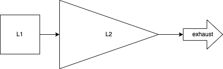

RFC-0320/TurbineModel
The DAN peg-in mechanism, or Turbine model

Maintainer(s): Cayle Sharrock
Licence
Copyright 2022 The Tari Development Community
Redistribution and use in source and binary forms, with or without modification, are permitted provided that the following conditions are met:
- Redistributions of this document must retain the above copyright notice, this list of conditions and the following disclaimer.
- Redistributions in binary form must reproduce the above copyright notice, this list of conditions and the following disclaimer in the documentation and/or other materials provided with the distribution.
- Neither the name of the copyright holder nor the names of its contributors may be used to endorse or promote products derived from this software without specific prior written permission.
THIS DOCUMENT IS PROVIDED BY THE COPYRIGHT HOLDERS AND CONTRIBUTORS “AS IS”, AND ANY EXPRESS OR IMPLIED WARRANTIES, INCLUDING, BUT NOT LIMITED TO, THE IMPLIED WARRANTIES OF MERCHANTABILITY AND FITNESS FOR A PARTICULAR PURPOSE ARE DISCLAIMED. IN NO EVENT SHALL THE COPYRIGHT HOLDER OR CONTRIBUTORS BE LIABLE FOR ANY DIRECT, INDIRECT, INCIDENTAL, SPECIAL, EXEMPLARY OR CONSEQUENTIAL DAMAGES (INCLUDING, BUT NOT LIMITED TO, PROCUREMENT OF SUBSTITUTE GOODS OR SERVICES; LOSS OF USE, DATA OR PROFITS; OR BUSINESS INTERRUPTION) HOWEVER CAUSED AND ON ANY THEORY OF LIABILITY, WHETHER IN CONTRACT, STRICT LIABILITY OR TORT (INCLUDING NEGLIGENCE OR OTHERWISE) ARISING IN ANY WAY OUT OF THE USE OF THIS SOFTWARE, EVEN IF ADVISED OF THE POSSIBILITY OF SUCH DAMAGE.
Language
The keywords “MUST”, “MUST NOT”, “REQUIRED”, “SHALL”, “SHALL NOT”, “SHOULD”, “SHOULD NOT”, “RECOMMENDED”, “NOT RECOMMENDED”, “MAY” and “OPTIONAL” in this document are to be interpreted as described in BCP 14 (covering RFC2119 and RFC8174) when, and only when, they appear in all capitals, as shown here.
Disclaimer
This document and its content are intended for information purposes only and may be subject to change or update without notice.
This document may include preliminary concepts that may or may not be in the process of being developed by the Tari community. The release of this document is intended solely for review and discussion by the community of the technological merits of the potential system outlined herein.
Goals
Tari is used to power the DAN’s economic engine.
This RFC describes the motivation and mechanism of the Minotari to DAN peg-in mechanism.
Related Requests for Comment
Description
Side-chains are related to their parent chains via a pegging mechanism. In general, peg-in transactions (transferring value to the side-chain) are straightforward. One locks value up on the parent chain, which can be referenced by the side-chains. However, the reverse transaction is fraught with difficulty, since the parent chain must know almost nothing about the transaction particulars of the side chain. We know this is the case, otherwise the entire side-chain + parent-chain system are forced to work in lock-step and the two chains are really just one larger, more complicated chain.
Peg outs are particularly difficult if the participants change on the side-chain (as opposed to say, payment channels, like the Lightning Network, where the same parties peg-in and -out).
There are several proposals to develop a reliable two-way peg, including space-chains, drive-chains and federated side-chains, like elements. All of them have particular trade-offs and difficulties.
For Tari, we propose a slightly different approach: A one-way peg with persistent 2nd-layer burn.
Because the operating principle is quite similar to that of a gas turbine, we call this approach the turbine model. Fuel (Minotari) is fed into the turbine, which is burnt (also burnt :)) which produces a hot, motive gas (Tari) that drives the engine (the DAN). The exhaust gas is ejected from the rear of the turbine (a portion of the instruction fees are burnt).
An aside - the monetary policy trilemma
The monetary policy trilemma states that you cannot control all 3 of these things simultaneously:
- exchange rate
- monetary policy (i.e. minting and burning to control supply)
- flow of capital (money leaving or entering the system)
Let’s briefly consider the trilemma from the point of view of the DAN.
Monetary policy
We are effectively forced to control monetary policy. Or put another way, we can’t let people freely mint their own Tari. Unfortunately, even though we have “chosen” to control supply, it’s difficult for us to control the Tari supply in practice. In the physical world, the money supply is typically managed by a central bank, with the emphasis on “central”.
The designers of a decentralised monetary system have precious few levers available to control supply and no simple ones.
Capital flow
Allowing free capital flow would require a reliable and efficient peg-out mechanism from the DAN back to the base layer. However, I argue that this is an Achilles heel. Any peg-out system you can devise that is coupled with a burn-type peg-in mechanism is an existential threat to the base layer.
Why? Because the peg-out necessarily requires creation of coins on the base layer by trusting some mechanism external to it. Note that we’re not bringing UTXOs that were pegged-in back into circulation (in this case they would not be burned, merely locked-up as in a traditional peg). Therefore, the base layer accounting simply has to accept these mints as valid.
Consequently, any bug whatsoever on the DAN related to the minting process’ authenticity could lead to undetectable inflation on the base layer.
A central axiom of side-chain design, if there is such a thing, is that the side-chain should pose zero risk to the security of the base layer. For this reason, the burn mechanism effectively excludes the possibility of peg ins.
So essentially, we cannot allow the free flow of capital either.
Exchange rate
Since we have already picked two legs of the trilemma, we cannot do anything about the third, and must allow the change rate to float.
The turbine model
This is actually not as terrible as it sounds. The trilemma doesn’t force you to sit at the vertex of the monetary policy triangle. If you allow partial freedoms in supply and capital flow, then the exchange rate will move, but will tend to remain range-bound.
Although capital flow here is not free, it’s not completely restricted either:
- Peg-ins are completely unrestricted.
- Submarine-swaps allow people to remove money from the system on the micro-level (albeit not on the macro level).
And the money supply can be tuned, if not controlled. This all leads to the proposal of a new mechanism, the turbine model:

The DAN Tari supply is increased by user peg-in deposits, and any other mechanism that we may want to enforce, such as asset issuer financing.
To prevent the eventual collapse of the Tari price to zero, there must be an exhaust mechanism that continually removes Tari from the system..
The simplest exhaust mechanism is to simply burn a fraction of Tari fees from every transaction! These can be very low. Presumably, over the long-run the burn rate should approximately match the Minotari blockchain tail emission.
The exhaust places a permanent upward pressure on the Tari exchange rate; but it will never exceed 1:1 with Minotari, since any premium will be immediately arbitraged away. This is because anyone can always burn as much Minotari as they wish and mint Tari at a 1:1 ratio on the DAN and then sell them for a risk-free profit. This action will increase the supply of Tari and drive the price back down to parity.
If the exhaust is temporarily insufficient to hold the peg, the Tari price will drop below 1 XTR. This will immediately shut off deposits because submarine swaps will a be cheaper route to obtaining Tari than burning Minotari (which are always 1:1). Since the exhausts upward price pressure is a constant force, the Tari price will eventually approach 1:1 again.
Over time, we expect this mechanism to provide a somewhat stable peg between Tari and Minotari with the Tari price occasionally dropping below parity and possibly remaining there for some time. As secondary markets for the Tari-Minotari pair matures, this event will immediately create a bid on Tari, since – in the absence of catastrophic failure – speculators know that the Tari price will eventually return to parity, causing upward pressure to come into play quickly and efficiently.
Change Log
| Date | Change | Author |
|---|---|---|
| 23 Nov 2023 | Thaum -> Tari | CjS77 |
| 1 Nov 2022 | First draft | CjS77 |